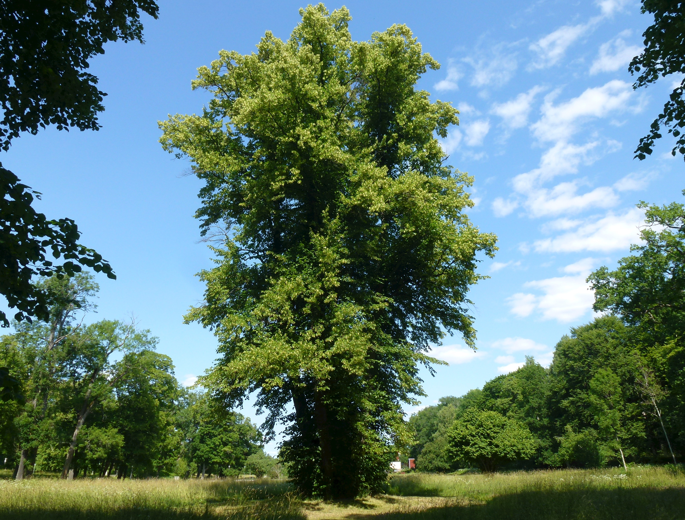

Tilia — Linden (Linde)
Amsterdam's undisputed queen — planted on every canal street since the Golden Age, dripping nectar, smelling like a summer evening, and quietly outlasting every regime that planted her.
Combat flavor
Tilia is the people's juggernaut — not the hardest wood, but near-immortal longevity and cultural indomitability make her a high-health anchor unit with a mass-beekeeper aura (nectar support: heals or buffs adjacent allies). Her coppice-regeneration trait could power a resurrection or fast-recovery mechanic after taking heavy damage.
Real-world facts
Typical / max height20–40 m typical (Tilia cordata); Tilia americana infrequently over 30 m; max recorded ~40 m
Lifespan500–1,000 years; some specimens documented at over 1,000 years — exceptionally long-lived
Wood~560 kg/m³ air-dry; soft, fine-grained, low-contrast; the classic European carving wood (medieval altarpieces, Grinling Gibbons)
Growth speedMedium
Ecology / notable traits~30 species across temperate Northern Hemisphere; enormous nectar producer — major honey tree, bees can be temporarily narcotised by fermented aphid honeydew dripping from leaves; no thorns, no significant toxicity; some evidence of mild allelopathic effects via leaf litter; culturally enormous — sacred in Germanic/Slavic tradition, village meeting trees, symbol of peace and justice; dominates Amsterdam street tree census (27,034 individuals — by far the most abundant genus); coppices vigorously and regrows after heavy damage
Gallery
